Using Jamovi: Correlation and Regression
This post is part of a series–demonstrating the use of Jamovi–mainly because some of my students asked for it. Notably, this is using version 0.8.6.0. Today’s topic is correlation and linear regression.
Note: This starts by assuming you know how to get data into Jamovi and start getting descriptive statistics.
Correlation
Running correlation in Jamovi requires only a few steps once the data is ready to go. To start, click on the Regression tab and then on Correlation Matrix. The following screen becomes visible.
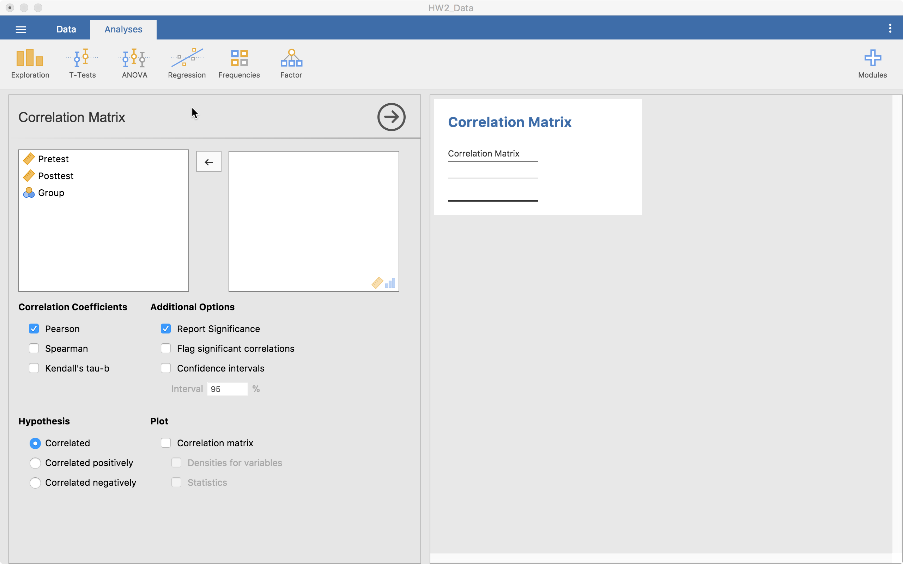
From here, we can drag all our continuous (or ordinal) variables over to the right-hand side. The table on the right (the output) will autofill as shown below.
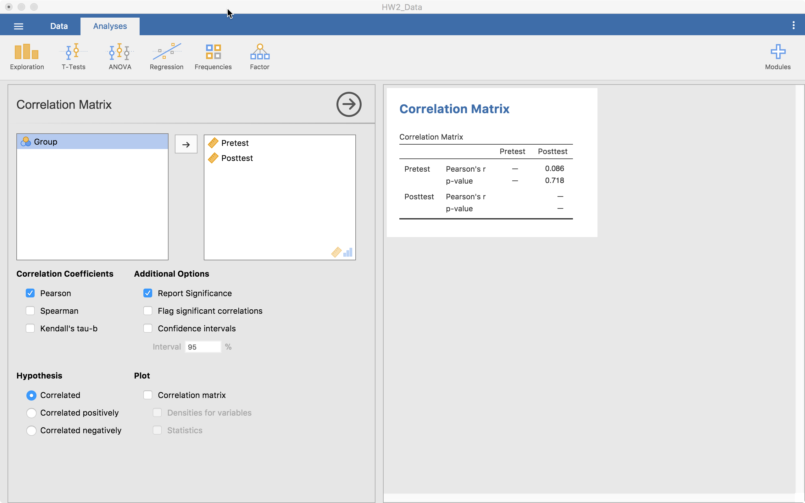
This table gives us the Pearson’s r correlation and its associated p-value. If we are looking at using another type of correlation, we can click on Spearmans or Kendall’s tau-b in the middle-left of the screen. We can ask for confidence intervals, we can change the hypotheses (two-tailed or one-tailed), and we can ask for a plot that provides some important information. If we click on “Correlation matrix” below the Plot header, we obtain what is shown below.
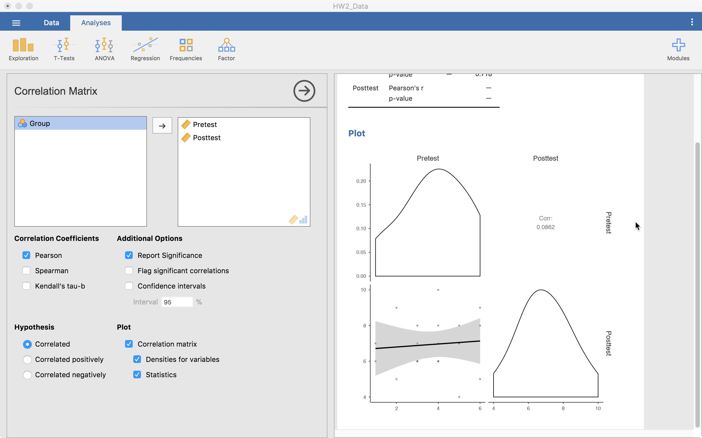
This matrix plot gives us a scatterplot, density plots of the individual variables, and reports the correlation. When there are many variables, this is a viable way to report all that information concisely and transparently.
That’s all I’m going to talk about with correlation as it is fairly simple compared to the next section—Linear Regression.
Linear Regression
Linear regression is much like correlation except it can do much more. Jamovi provides a nice framework to build a model up, make the right model comparisons, check assumptions, report relevant information, and straightforward visualizations. Given all this flexibility, it can get confusing what happens where. So below, I’ll show, step by step, how to build a regression model.
Variables to Use
The first menu you are confronted with is:
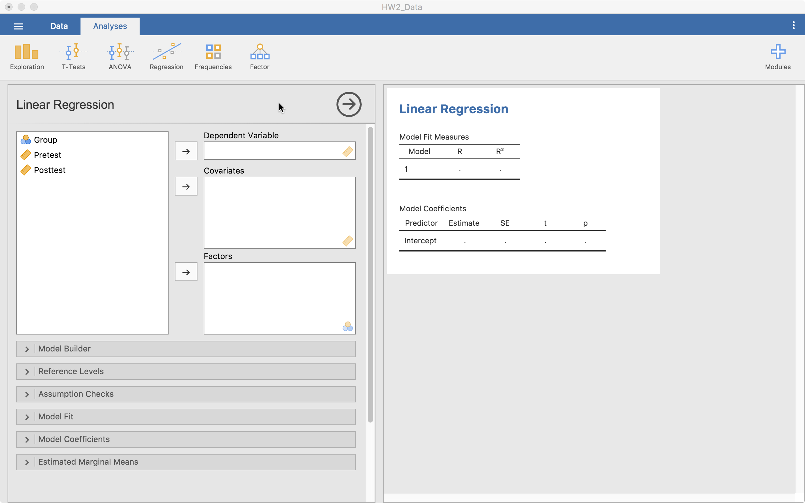
This gives us a few places where we can place variables:
- Dependent Variable. This is where the the outcome variable goes. Only one variable can be here for any single model.
- Coviarates. These are the continuous predictor variables you will use in the model.
- Factors. These are the categorical predictor variables you will use in the model.
Here, we have a continuous predictor and a categorical predictor.
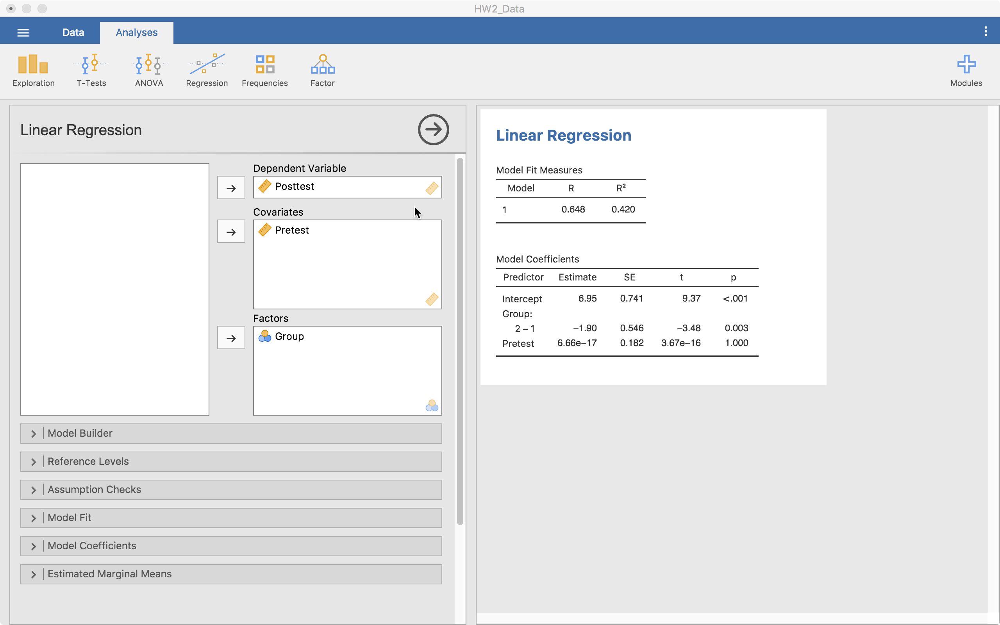
Notice that the tables start autofilling once you place the variables in those slots.
Model Specifications
The next thing we need to consider is how the model will look and how we will built up the models. There’s no “proven” way to do this but there are some common practices. To build the model, we will use the + Add New Block button. “Blocks” are individual building blocks of the final model. In each block we will add a variable(s). Each block is then compared statistically so we can decide if one model is significantly better than the others.
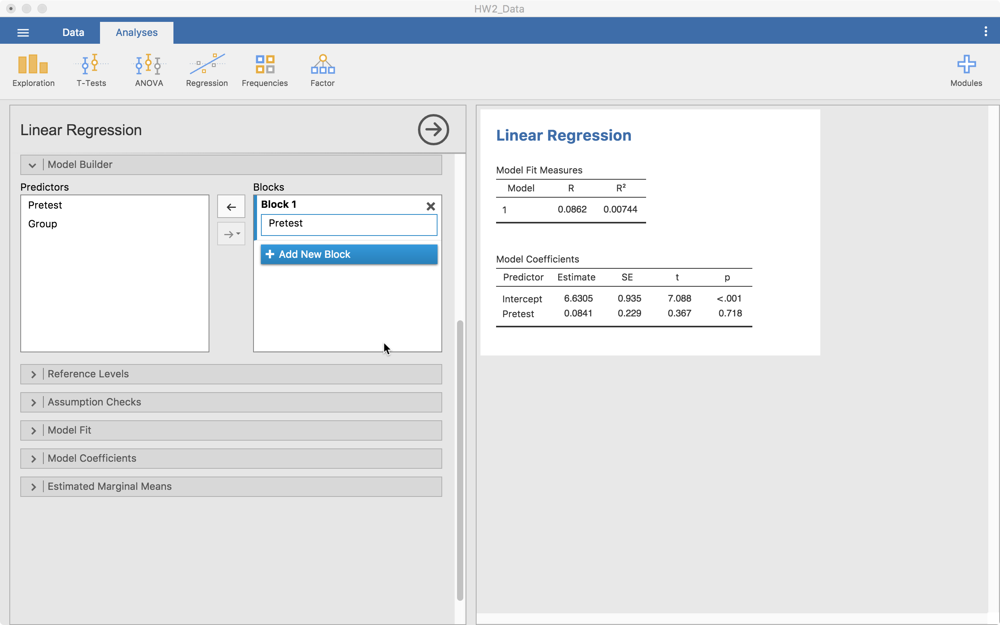
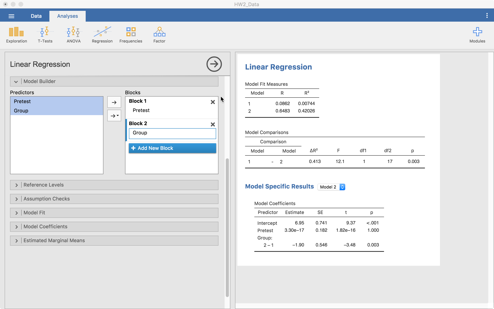
In the example above, we start with just pretest in the model (Block 1). Then we add another block and add Group (Block 2). Notice that in the output we have a few things showing up.
- We have model fit statistics for each model.
- We have a “Model Comparisons” table showing us that from model 1 to 2, we are significantly different (p = .003). In this case, model 2 is better given its much higher \(R^2\).
- Then we have “Model Specific Results” with a drop-down menu to select one of the models (right now it is on Model 2).
From here, we can also look at an interaction between Pretest and Group. To do that we add a new block, highlight both pretest and group from the left-hand side list, select the arrow that has a downward triangle and select “Interaction”. When we do that, the new block has Group*Pretest now added to it, which means we did it right.
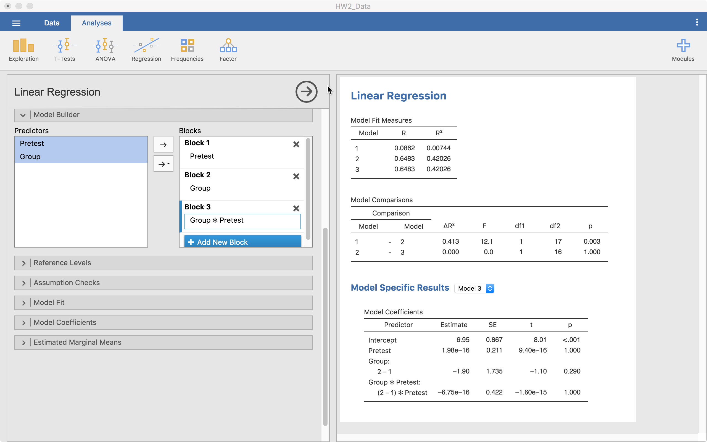
In this case, we can see that the model with the interaction isn’t statistically better than the model without it. At this point, we have our model built up very well but now we can make small adjustments.
Reference Levels
This menu allows us to change the reference level of any categorical variables. Notice that in the table, it says 2 - 1 under Group:. This says that (and the screenshot agrees), level 1 is the reference level. This means, our comparisons for our group is in reference to level 1. So any differences reported are based on a comparison with level 1. We can change this if we need to in order to understand the model better.
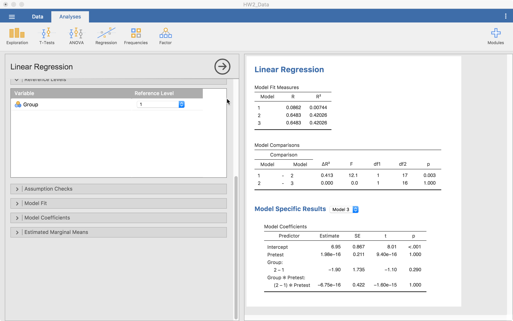
Assumption Checks
Jamovi provides ways to check a number of assumptions, including “Q-Q plots” for normality, “residual plots” to understand homoscedasticity, among others. Here, we are going to look at Q-Q plots and residual plots.
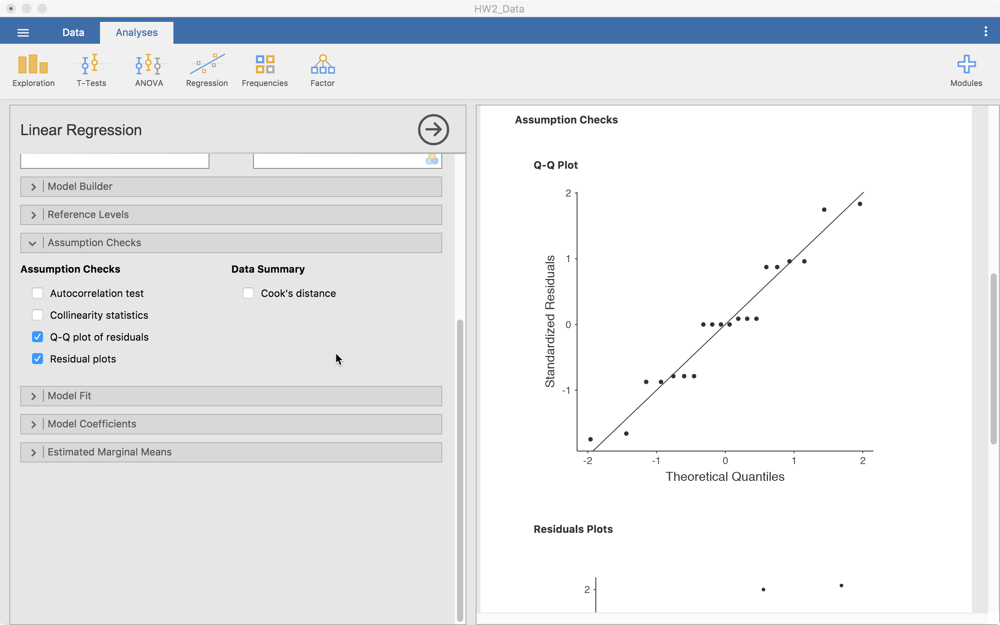
Only the Q-Q plot is visible in the screenshot but the others are right below it. Based on this information we can decide if the model’s assumptions appear to hold here.
Model Fit
The model fit menu gives us the options to get a number of model fit statistics. For our purposes, the default works just fine.
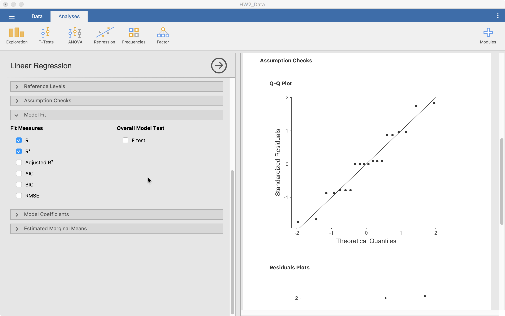
Model Coefficients
We can also ask for a bit more information regarding our model estimates. We can get the Omnibus ANOVA test for each coefficient, ask for standardized estimates (and their confidence intervals), and the confidence intervals of the regular estimates.
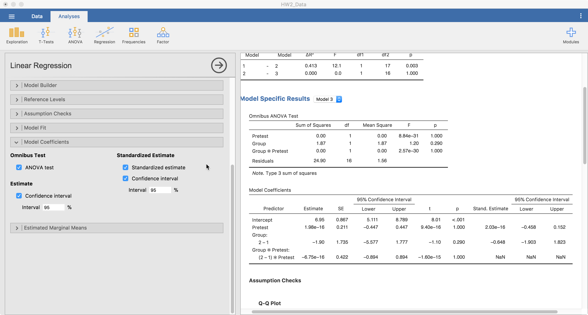
Estimated Marginal Means
Finally and importantly, we can look at the estimated marginal means. This will provide a plot that can help understand coefficients better, particularly interactions. Below, I show how to assess the main effects and interaction (not significant) of Pretest and Group.
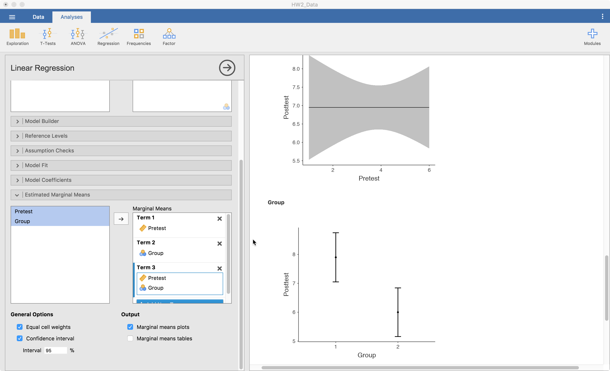
Term 1 is the main effects of pretest here because that is the variable I dragged to that slot. Term 2 is group’s main effect. Term 3 is the interaction between pretest and group since they are both in there. It is best if one of the variables is continuous, make that one the first one in there. That is because the second is always considered a grouping variable. So, with continuous variables, it chops it up into three parts and using it as a categorical predictor for the plot.
Conclusions
Well, that’s it for now. Leave comments or questions below!